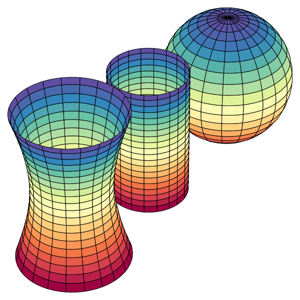
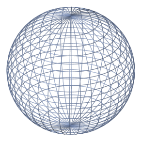
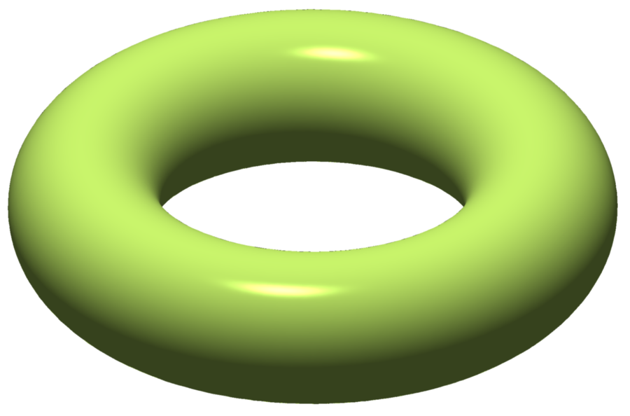
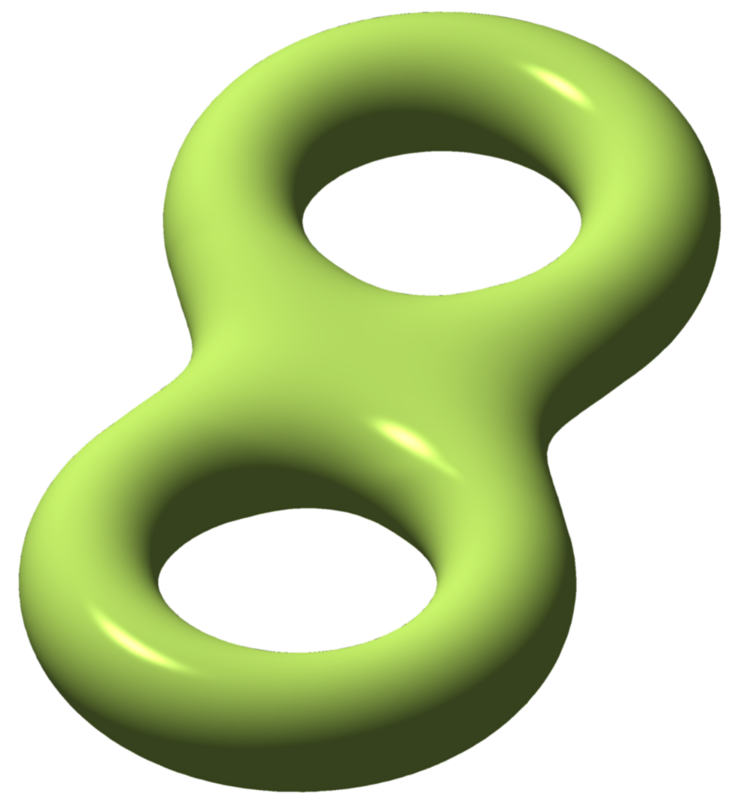
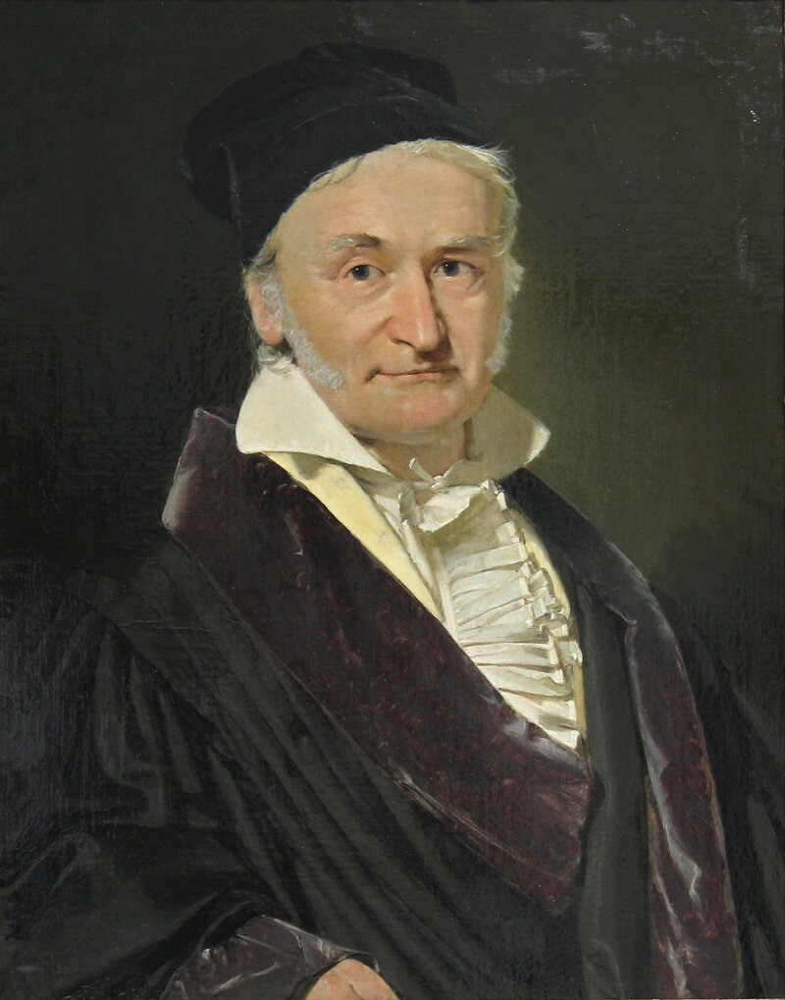

종이 한 장을 테이블에 놓자. 완벽하게 평평하다. 이제 이 종이를 돌돌 말아서 원통 모양으로 만들어 보자. 우리 눈에는 종이가 분명히 “휘어졌다”. 하지만 종이 위에 사는 아주 작은 개미의 관점에서 생각해 보자. 이 개미는 종이 위에서 직선을 긋고, 삼각형을 그리고, 원의 둘레와 넓이를 잴 수 있다. 놀랍게도, 개미가 측정하는 모든 기하학적 양은 종이를 말기 전과 완전히 동일하다. 삼각형의 내각의 합은 여전히 정확히 180°이고, 반지름 r인 원의 둘레는 여전히 2πr이다. 개미에게 종이는 말기 전이나 후나 “같은” 공간이다.
이제 구면 — 예를 들어 지구본 — 위에 사는 개미를 생각하자. 이 개미가 적도와 두 자오선으로 이루어진 삼각형을 그리면, 내각의 합이 180°를 넘는다. 북극에서 두 자오선이 이루는 각도가 α라면, 이 삼각형의 내각의 합은 180°+α이다. 반지름 r인 원을 그리면 둘레가 2πr보다 짧다(마치 누군가 원을 오그라뜨린 것처럼). 이 개미는 자기가 사는 공간이 평평하지 않다는 것을 밖을 볼 필요 없이 알 수 있다.
원통의 개미와 구면의 개미 — 둘 다 “휘어진” 곡면 위에 살지만, 한쪽은 그것을 감지할 수 없고 다른 쪽은 감지할 수 있다. 이 차이는 무엇인가? 같은 "휘어짐"이라는 단어를 쓰고 있지만, 사실 이것은 전혀 다른 두 종류의 휘어짐이다. 이 구분을 명확히 하는 것이 이 장의 핵심이다.

한 가지 실마리: 종이를 원통으로 말 때 종이는 찢어지거나 늘어나지 않는다. 점과 점 사이의 거리가 보존된다. 하지만 종이를 구면 위에 빈틈없이 붙이려면 반드시 찢거나 구기거나 늘여야 한다. 이 차이가 결정적이다.
패턴
"휘어짐"에는 두 종류가 있다. 외재적 휘어짐(extrinsic curvature)은 곡면이 3차원 공간에 어떻게 묻혀 있는가에 대한 정보다 — 밖에서 보는 관찰자만 알 수 있다. 내재적 휘어짐(intrinsic curvature)은 곡면 위에서의 측정만으로 결정되는 정보다 — 곡면 위에 사는 존재도 알 수 있다.
원통은 외재적으로 휘어져 있지만 내재적으로는 평평하다. 두 주곡률이 κ1=1/r, κ2=0이므로 가우스 곡률 K=κ1κ2=0이다. 구면은 κ1=κ2=1/r이므로 K=1/r2>0. 안장면은 κ1>0, κ2<0이므로 K<0. 가우스 곡률 K의 부호가 내재적 기하학의 성격을 결정한다: K>0이면 삼각형 내각의 합이 180°보다 크고, K<0이면 작으며, K=0이면 정확히 180°이다.
여기서 놀라운 패턴이 보인다. K=κ1κ2는 두 주곡률의 곱이다. 주곡률 각각은 외재적 양이다 — 곡면을 밖에서 봐야 알 수 있다. 그런데 그 곱은 내재적이다 — 곡면 위에서의 측정만으로 결정된다! 이것은 마치 두 비밀번호를 곱한 결과가 공개 정보인 것과 같다. 외재적 양들의 특별한 조합이 내재적 양이 된다.
이 사실의 일상적 응용이 있다. 피자 접기다. 얇은 피자 조각이 축 늘어진다면, 세로 방향으로 살짝 접으면 빳빳해진다. 왜? 접기 전 피자의 가우스 곡률은 K=0(평면)이다. 세로로 접으면 그 방향의 곡률 κ1>0이 된다. K=0이 보존되어야 하므로(종이는 늘어나지 않으니까) κ2=0이어야 한다 — 가로 방향으로 휘어질 수 없다. 결과적으로 피자가 아래로 처지지 않는다. 가우스의 Theorema Egregium이 피자 먹는 법을 설명하는 순간이다.
이것은 또한 모든 세계지도가 왜곡될 수밖에 없는 이유이기도 하다. 구면의 K=1/r2=0이고 평면의 K=0이다. 가우스 곡률이 보존되는 변환(등거리 사상)으로는 구면을 평면으로 펼칠 수 없다. 메르카토르, 정거방위, 몰바이데 — 어떤 도법을 써도 면적이 틀리거나 각도가 틀리거나 거리가 틀린다. 이것은 기술적 한계가 아니라 수학적 불가능성이다.
정리 (Theorema Egregium)
가우스 곡률 K=κ1κ2는 계량 텐서 gij와 그 1차, 2차 편미분만으로 계산된다. 곡면이 3차원 공간에 어떻게 묻혀 있는지(embedding)와 무관하다.
정리의 이름 Theorema Egregium은 "놀라운 정리"라는 뜻의 라틴어다. 가우스 자신이 이 이름을 붙였다 — 가우스처럼 절제된 사람이 "놀랍다"고 했다면 정말 놀라운 것이다.
이 정리가 정확히 왜 놀라운지 다시 짚어 보자. κ1과 κ2를 계산하려면 곡면의 법벡터, 즉 곡면이 3차원 공간에 어떻게 놓여 있는지를 알아야 한다. 이것은 명백히 외재적 정보다. 그런데 K=κ1κ2를 계산할 때는, 이 외재적 정보가 기적적으로 상쇄되어 오직 gij만 남는다. 마치 x와 y를 각각은 모르지만 xy의 값은 알 수 있는 상황 — 방정식의 구조가 개별 변수를 숨기면서도 곱을 드러내는 것이다.
실제 계산에서, 2차원 곡면의 가우스 곡률은 g11, g12, g22와 이들의 편미분으로 이루어진 (꽤 복잡한) 공식으로 주어진다. 중요한 것은 공식의 구체적 모양이 아니라, 그 공식에 법벡터나 임베딩 정보가 전혀 등장하지 않는다는 사실이다. 리만은 이 관찰을 n차원으로 확장하여, 리만 곡률 텐서 전체가 계량만으로 결정됨을 보였다.
가우스-보네 정리를 잠깐 맛보고 가자.



닫힌 곡면의 가우스 곡률을 전체 표면에 걸쳐 적분하면: ∬MKdA=2πχ(M). 여기서 χ(M)은 오일러 특성수라는 위상 불변량이다. 구면이면 χ=2, 토러스이면 χ=0이다. 곡면을 아무리 구기고 늘여도 χ는 바뀌지 않는다. 국소적 기하(곡률)를 모두 합하면 전역적 위상(오일러 수)이 튀어나온다 — 미분기하학에서 가장 아름다운 다리 중 하나다.
정의
내재적 성질 (안에서 아는 것 / Measurable From Within) — 계량 텐서 gij만으로 결정되는 기하학적 양. 곡면 위에 사는 존재가 자와 각도기만으로 측정할 수 있는 모든 것: 거리, 각도, 면적, 가우스 곡률, 측지선 등.
외재적 성질 (밖에서 아는 것 / Visible From Outside) — 곡면이 주변 공간에 어떻게 묻혀 있는가에 의존하는 양. 법벡터, 주곡률, 평균곡률 등이 여기에 속한다. 같은 내재적 기하를 가진 곡면이 다른 외재적 모양을 가질 수 있다(원통과 평면처럼).
가우스 곡률 (두 주곡률의 곱 / Product of Principal Curvatures, K=κ1κ2) — 곡면의 각 점에서의 내재적 휘어짐. 외재적으로 정의되지만 내재적으로 결정된다는 것이 Theorema Egregium의 핵심이다. K>0이면 구면형, K<0이면 안장형, K=0이면 평면형(원통 포함).
주곡률 (최대·최소 휘어짐 / Maximum and Minimum Bending, κ1,κ2) — 한 점에서 모든 방향의 법곡률 중 최대값과 최소값. 각각은 외재적이지만, 그 곱(가우스 곡률)은 내재적이고 합(평균곡률)은 외재적이다. 가우스-보네 맛보기: 닫힌 곡면에서 K를 적분하면 위상 불변량 2πχ(M)이 나온다.
핵심 인물과 일화
카를 프리드리히 가우스 — “놀라운 정리” (1827)

가우스는 자신의 정리에 직접 이름을 붙인 드문 수학자다. 1827년 논문 Disquisitiones generales circa superficies curvas에서 그는 이 결과를 Theorema Egregium — 라틴어로 “놀라운 정리” — 이라 불렀다. 가우스 같은 사람이 "놀랍다"고 한 것이니, 정말로 놀라운 결과였던 셈이다.
무엇이 그토록 놀라웠는가? 가우스 곡률 K=κ1κ2는 두 주곡률의 곱이다. 주곡률 κ1, κ2 각각은 곡면이 3차원 공간에 어떻게 묻혀 있는가(외재적 정보)에 의존한다. 원통의 주곡률은 (1/r,0)이고, 이것을 알려면 원통을 밖에서 봐야 한다.
그런데 K=κ1κ2는 오직 제1기본형식(계량 텐서 gij)과 그 도함수만으로 계산된다. 곡면을 밖에서 볼 필요가 없다. 곡면 위에 사는 2차원 존재가, 삼각형의 내각의 합이나 원의 둘레와 넓이의 비를 측정하는 것만으로 K를 알 수 있다.
이것이 왜 중요한가? 종이를 원통으로 말아도 K는 바뀌지 않는다 — 종이의 K는 원래 0이고, 원통의 K=(1/r)×0=0이기 때문이다. 그래서 종이는 찢어짐 없이 원통으로 말 수 있다. 하지만 구면의 K=1/r2>0이므로, 구면을 평면으로 펼칠 수 없다 — 모든 세계지도에 왜곡이 있는 근본적 이유다.
가우스의 측지 사업 경험이 이 발견에 영향을 미쳤을 가능성이 높다. 측량 과정에서 그는 지구 표면의 곡률을 밖에서 보지 않고 — 오직 지표면 위에서의 측정만으로 — 결정할 수 있다는 사실을 체감했을 것이다. 실용적 경험이 순수한 통찰로 결정화된 아름다운 사례다.
시각화 아이디어
피자 정리: 피자 조각을 구부리면 늘어지지 않는다 — K=κ1κ2이고 원래 K=0
종이접기 vs 풍선: K=0인 곡면(원통, 원뿔)과 K=0인 곡면(구, 안장)을 전개도로 펼치려 시도